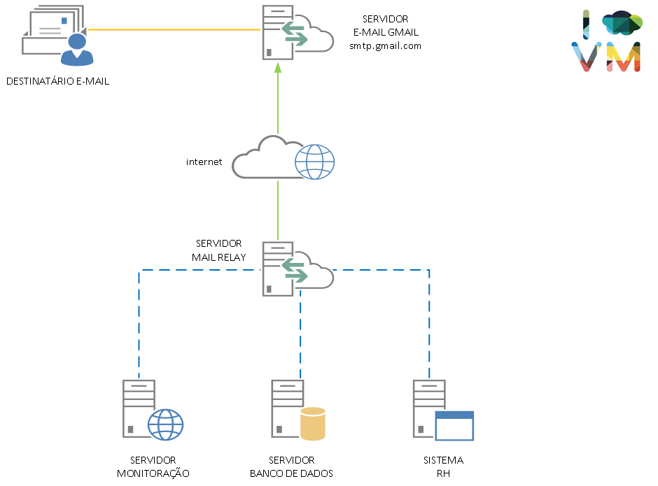
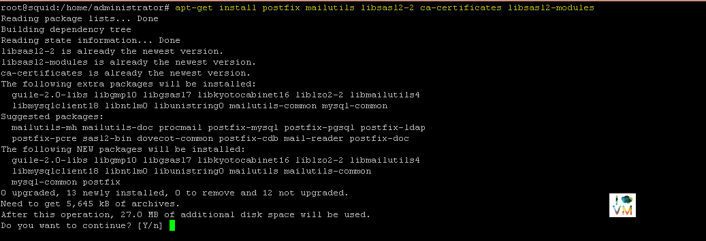
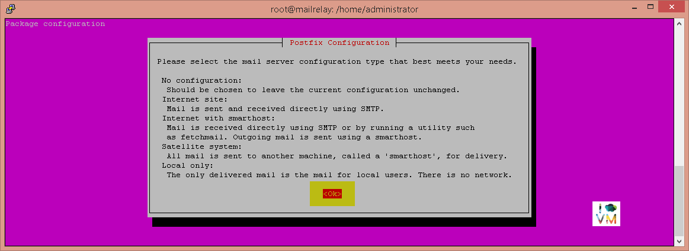
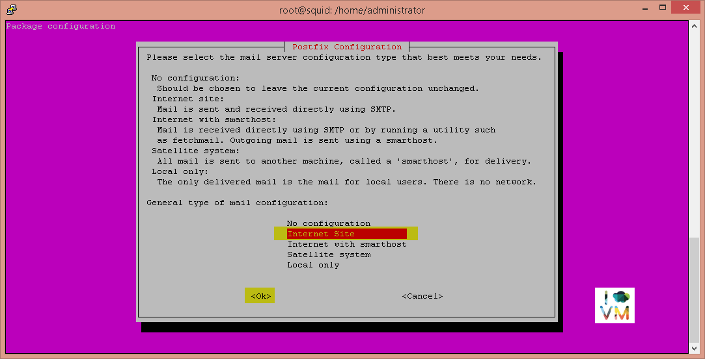
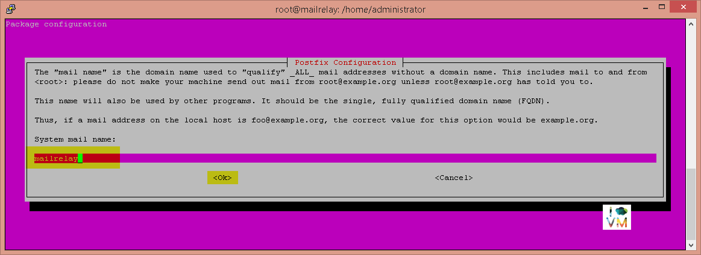
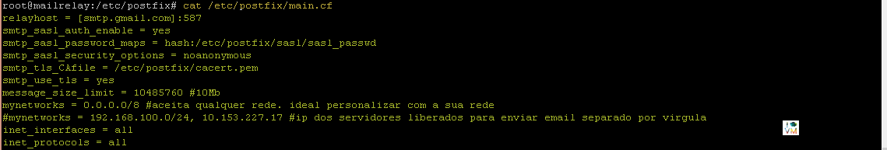
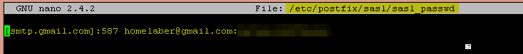

Postfix Mail Relay - Instalação servidor de e-mail Postfix no Linux Ubuntu e configuração para enviar e-mails via Gmail
BlogCompartilhe esse post nas redes sociais...
Olá Homelabers!
Nesse post vou mostrar a vocês como instalar e configurar o servidor de e-mail Postfix no Linux Ubuntu e como usar a sua conta do Gmail para enviar e-mails a partir desse servidor. Iremos criar um chamado Mail Relay, ou seja, esse servidor será o responsável por enviar e-mails de todas as suas aplicações ao mundo externo atraves do Gmail.
[caption id=“attachment_922” align=“aligncenter” width=“580”] Logo PostFix - http://www.postfix.org/[/caption]
Esse tipo de configuração é muito utilizada nas empresas, imagine o cenário:
-
O servidor de monitoração TAMBÉM será um servidor de e-mail (o que não é algo muito legal) ou
-
o servidor de monitoração precisa conhecer e falar com um servidor de e-mail. Então é ai que entra no nosso servidor de Mail Relay.
Veja abaixo uma figura explicando o conceito

Então vamos lá!
[su_note radius=“0”]Eu fiz essa instalação em uma VM com as seguintes configurações: 1 vCPU 20GB disco 1 GB memória Linux Ubuntu Server (clique no link para ver o post da instalação do Ubunto no VMware) [/su_note]
Sempre lembrando, os comandos abaixo devem ser executados como sudo
A primeira coisa que faremos é instalar o Postfix e os módulos necessários.
apt-get install postfix mailutils libsasl2-2 ca-certificates libsasl2-modules

Na tela de configuração do Postfix selecione as opções padrão

Escolha a opção Internet Site

Escolha um nome para o sistema. Eu costumo usar o mesmo nome da maquina para facilitar.

O próximo passo é criar um backup do arquivo de configuração inicial do Postfix /etc/postfix/main.cf
mv /etc/postfix/main.cf /etc/postfix/main.cf.original
Feito isso, vamos criar um novo arquivo em branco, apenas com as configurações necessárias.
nano /etc/postfix/main.cf
Copie e cole o texto abaixo dentro do arquivo main.cf
relayhost = [smtp.gmail.com]:587
smtp_sasl_auth_enable = yes
smtp_sasl_password_maps = hash:/etc/postfix/sasl/sasl_passwd
smtp_sasl_security_options = noanonymous
smtp_tls_CAfile = /etc/postfix/cacert.pem
smtp_use_tls = yes
message_size_limit = 10485760 #10Mb
mynetworks = 0.0.0.0/8 #aceita qualquer rede. ideal personalizar com a sua rede
#mynetworks = 192.168.100.0/24, 10.153.227.17 #ip dos servidores liberados para enviar email separado por virgula
inet_interfaces = all
inet_protocols = all
O arquivo de configuração do Postfix deve ficar assim:

Agora vamos criar as chaves de criptografia para proteger o arquivo onde a senha de acesso da sua conta será guardada.
cat /etc/ssl/certs/Thawte_Premium_Server_CA.pem | tee -a /etc/postfix/cacert.pem
Edite o arquivo /etc/postfix/sasl/sasl_passwd.
nano /etc/postfix/sasl/sasl_passwd
Copie e cole o texto abaixo no arquivo e configure com as suas informações.
[smtp.gmail.com]:587 USERNAME@gmail.com:PASSWORD
O arquivo deve ficar assim:

[su_box title=“ATENÇÃO” box_color="#FF0000"]Se a sua conta do Gmail tem o segundo fator de autenticação habilitado, será necessário criar uma senha de aplicativo para utilizar aqui, caso contrário não irá funcionar.
**Como gerar uma senha de app: **
* Acesse a página Senhas de app [ link ](https://security.google.com/settings/security/apppasswords). Talvez seja necessário fazer login na sua Conta do Google.
* Na parte inferior da página, clique em Selecionar aplicativo e escolha o aplicativo que você está usando.
* Clique em Selecionar dispositivo e escolha o dispositivo que você está usando.
* Selecione Gerar.
* Siga as instruções para inserir a senha de app (o código de 16 caracteres na barra amarela) no seu dispositivo.
* Selecione Concluído.
[/su_box]
Altere as permissões do arquivo:
chmod 400 /etc/postfix/sasl/sasl_passwd
Execute a criptografia:
postmap /etc/postfix/sasl/sasl_passwd
E para finalizar reinicie o serviço do Postfix:
service postfix restart
Prontinho. O seu servidor de MailRelay já está instalado e configurado!
[su_note radius=“0”]Troubleshooting:[/su_note]
Para fazer o teste, abra uma segunda janela e monitore o log do Postfix com o comando abaixo. Todos os e-mails enviados com sucesso ou não aparecerão nesse arquivo.
tail -f /var/log/maillog
Para enviar um e-mail utilize o comando abaixo:
echo “MONITOR … AVISO DE MONITORAÇÃO HOMELAB” | mail -s “MONITOR DO SEU HOMELAB” -a “From: monitor@homelab.srv.br” presidenta@presidencia.gov.br
É isso! Finalizamos mais um post.
Escreva nos comentário se você conseguiu fazer a instalação e como está usando o Postfix no seu lab.
Faça igual ao gatinho ai da foto! Curta a página do Homelaber Brasil no Facebook - já estou apelando para gatinhos :)
Compartilhe esse post nas redes sociais...Valdecir Carvalho
Nerd e pai orgulhoso da Mariana e João. Profissional Sênior de TI com foco em arquitetura de infraestrutura e cloud computing. Blogueiro, podcaster, palestrante, amante de comunidades técnicas, fotógrafo aposentado e adora jogos antigos.
#vExpert · #VMUGLeader · #VUGBrasil · #vBronwBagBrasil · #VeeamVanguard